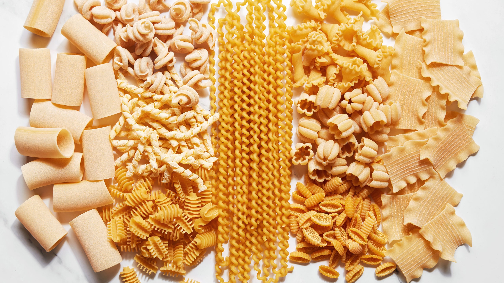
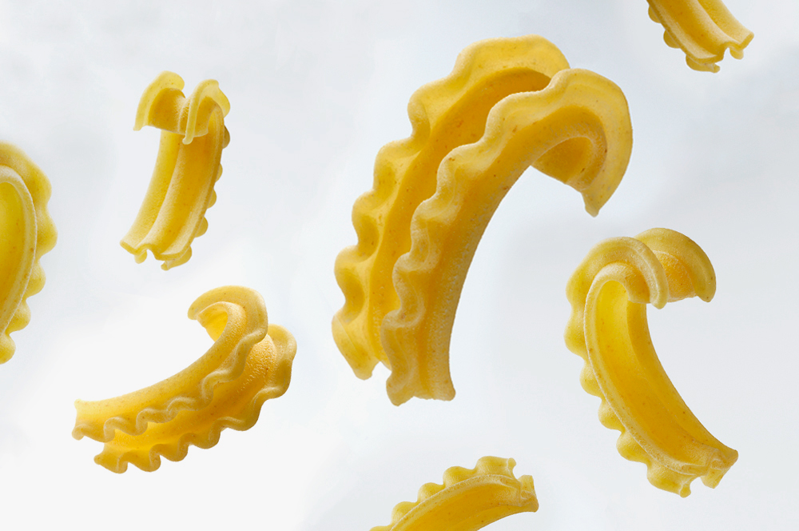

Welcome to my website! As a self-proclaimed pasta fanatic, I've always been eager to learn more about the variety of pasta shapes that exist, as well as understand the origins of each unique style. This website will explore various categories of ribbon, soup, shaped, and tubular pasta, as well as offer some recipe suggestions!
The origins of pasta are debatable. Some say it was brought to Italy by Marco Polo in the late 13th century, however records of pasta-like foods can be traced back to as early as 3000 B.C. within Chinese civilizations. Today, pasta is a staple of diets worldwide. It's versatility in shape and easy-to-prepare nature makes it a favorite for college students and top chefs alike -- navigate around this website to uncover more!
To elaborate, this website will be exploring four categories of pasta shape: ribbon, soup, shaped, and tubular. Ribbon pasta is typically in long strands, and does not require any additional shaoing. Soup pasta includes smaller pasta shapes a firm texture that lends well as additions to any soup base. Shaped pasta are generally on the smaller side, and involve any non-tubular pasta that is manipulated usually through pinching or sqeezing of the pasta dough. Finally, tubualr pasta involves any hollow or hollowed-out pasta shape.
 